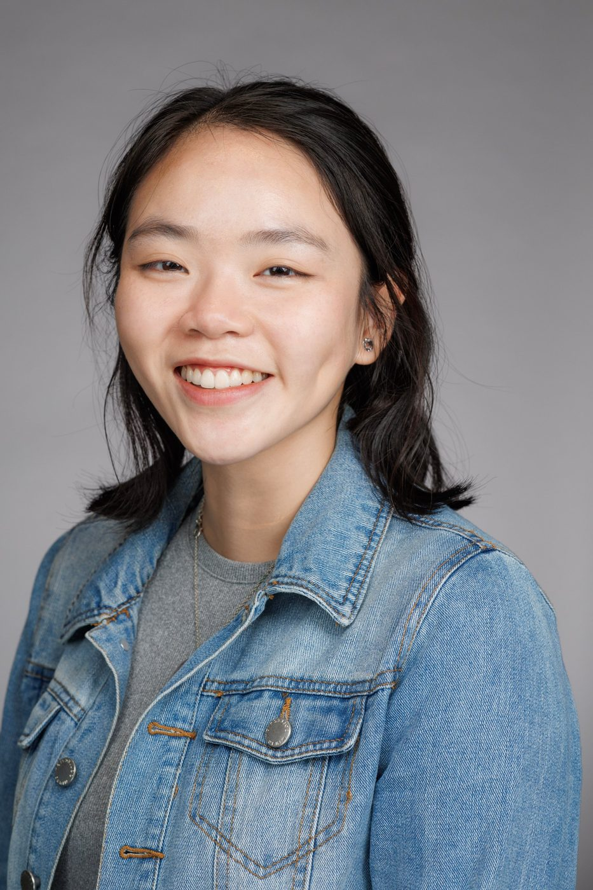

FionaHoang
fee-OH-nuh hwahngnoun
Hoàng Hạnh Phương
- A software engineer who likes building the parts of a system that everyone else gets to lean on. "She's done AI infrastructure at Huawei and research tools at the University of Toronto, and she's open to backend, infrastructure, ML, or something she hasn't tried yet."
- (volleyball) A setter: one who makes other people look good and receives none of the credit.
- (informal) A baker, chiefly of matcha cookies.
- A speaker of five languages, or six, depending on whether Python counts.
ORIGINFrom Vietnamese Hoàng Hạnh Phương. Published as Phuong Hanh Hoang.
SEE ALSOexperience, research, languages, off the clock, contact
